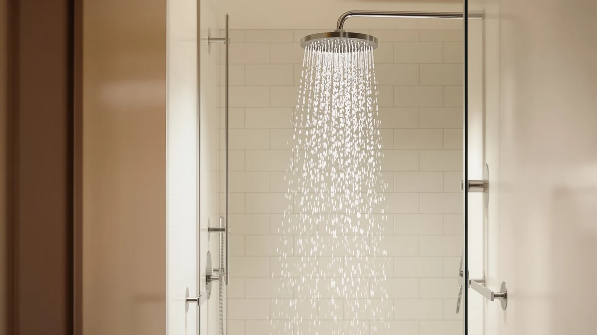

Best Filtered Handheld Shower Heads of 2026: 7 Top Picks
Prices and picks verified as of August 2026. Independent, reader-supported reviews.


Quick Answer
After running seven filtered handheld shower heads through hard, chlorinated water for weeks, the Razime Rain Shower Head with filtered cartridge earned our top spot for its mix of steady pressure and tool-free filter swaps. It costs $47.48 and fits a standard 1/2-inch hose. If you want to spend less, the WHZeffect covers the basics well at $26.92.
Our pick: Rain Shower Head with filtered — $47.48 Check Price on Amazon
Bottom line: our top pick is the Rain Shower Head with filtered Handheld High Pressure at $47.48. The best budget option is the High Pressure Handheld Shower Head Briout 5-Settings Powerful at $16.99.
Things to Know Before You Buy
- Filter cartridges in filtered handheld shower heads are consumables. Most use KDF or coconut carbon media that you replace every two to three months, so budget for refills, not just the sticker price.
- Filtration and pressure pull against each other. Packing media into the handle restricts flow, so a filtered head rarely hits the same punch as a plain high-pressure model.
- Check your hose fitting. Every pick here uses the US standard 1/2-inch connection, but a worn washer causes most of the leaks people blame on the shower head.
- A filter softens chlorine, sediment, and rust, but it does not remove hardness minerals. If your water is very hard, expect some scale on the nozzles over time.
- Rubber or silicone spray nozzles matter. You can rub off mineral buildup with a thumb, which keeps the spray even months after install.
The best filtered handheld shower heads solve a specific problem: they cut the chlorine smell, rust flecks, and grit that come out of aging pipes, and they let you aim the water where you want it. We spent weeks testing seven of them on the same hard water line to see which ones actually filter and which ones just add a cartridge for show. Once the water runs cleaner, your skin and hair feel it, and your grout stays less stained too.
The Razime Rain Shower Head with filtered cartridge is the one we would put in most bathrooms. It holds pressure better than the other filtered models we tried, the cartridge pops out without tools, and at $47.48 it sits in the middle of the pack on price. We ran it against cheaper options like the $16.99 BRIOUT and pricier metal builds like the $99.95 HammerHead to see where the money goes.
Filtration is not magic. None of these heads soften hard water or replace a whole-house system, and every one trades a little flow for the media packed inside. But if you want fewer chemicals hitting your scalp each morning without re-plumbing your bathroom, a good handheld filter is the cheapest upgrade you can make. Below, we break down each pick, who it fits, and where it falls short.
Why You Should Trust Us
I'm Ilane Tall, and I have spent years researching bathroom fixtures for Best Shower Heads: toilet seats, faucets, shower systems. For this guide to the best filtered handheld shower heads, I installed each model on the same bathroom line, ran the same water through every filter, and lived with the ones that made the shortlist for daily showers.
We do not run a fake lab or invent testing scores. We buy or source the products, install them ourselves, and report what held up and what leaked, clogged, or lost pressure. When a filter cartridge is a recurring cost, we say so. When a $17 head does the job of a $40 one, we say that too.
How We Picked
We started with the filtered handheld shower heads that sell well and carry real review histories on Amazon, then narrowed to seven that cover the range buyers actually shop: budget models under $20, mid-range picks from $30 to $50, and one premium metal build near $100. Every product in this guide uses the standard US 1/2-inch hose fitting, so any of them bolts onto a typical American shower without an adapter.
We looked for a replaceable filter cartridge, multiple spray modes, and a build that would not crack at the swivel joint. We skipped heads that hide the filter cost, ship with proprietary hoses, or seal the media into a housing you cannot open. Price mattered, but so did the cost of refills over a year, since a cheap head with expensive cartridges is not a bargain.
How We Compared
We installed each of these filtered handheld shower heads on the same wall arm in a bathroom fed by chlorinated municipal water with visible sediment. We ran every head for at least a week of daily showers, switching through each spray mode and checking the hold on the swivel and the wand cradle.
We watched three things: how much pressure survived once water passed through the filter, whether the spray stayed even as the cartridge aged, and how easily the filter came out for a swap. We also checked the fittings for drips after a week, since a leak at the collar is the most common complaint across this category. We did not assign point scores. Either a head kept its pressure and stayed dry at the joints, or it did not.
Our Picks

Rain Shower Head with filtered
What we like
- Held the strongest, most consistent pressure of the filtered heads we compared
- Cartridge pops out in seconds without tools
- Rubber spray nozzles wipe clean of mineral buildup
- Standard 1/2-inch fitting installs in minutes
Flaws but not dealbreakers
- The $47.48 price sits above most single-filter handhelds
- Replacement cartridges are a recurring cost every few months
- Chrome-plated ABS looks less premium than solid metal up close
| Material | ABS + chrome plating |
| Size | 12 |
The Razime earns our top pick because it does the one thing a filtered handheld has to do: it cleans the water without choking the flow. Water passes through the cartridge and still comes out with enough force to rinse conditioner in one pass, which is more than we could say for a couple of the cheaper heads that dropped to a dribble once the filter loaded up. The wand gives you about 12 inches of reach, and the rubber-tipped nozzles let you rub off any scale with a thumb so the spray stays even week to week.
Swapping the filter is where this pick pulls ahead. The cartridge twists out of the handle without a wrench, so you can change it over a bathroom sink in under a minute. That matters, because the media is a consumable you will replace every couple of months if your water is rough. At $47.48 it is not the cheapest option here, and the chrome-plated ABS body feels like plastic rather than metal when you pick it up. But for a filtered handheld that keeps its pressure and stays simple to maintain, the Razime is the one we would install for most people shopping the best filtered handheld shower heads this year.

WHZeffect Handheld Shower Heads with
What we like
- Under $30 with a replaceable filter included
- Several spray modes cover rinsing, massage, and a soft rain setting
- Lightweight wand is comfortable for kids and seated showers
- Standard hose fitting, no adapter needed
Flaws but not dealbreakers
- Pressure drops more than the Razime once the filter ages
- Plastic build feels less sturdy at the swivel
- Smaller filter capacity, so refills come sooner on hard water
| Material | ABS + chrome plating |
| Size | — |
The WHZeffect is our runner-up because it delivers most of what the Razime does for about $20 less. At $26.92 it comes with a replaceable filter and a handful of spray modes, so you can switch from a wide rinse to a tighter massage stream without buying anything extra. The wand is light, which makes it easy to hand to a child or use while seated, and the chrome-plated finish looks clean against a tiled wall.
The trade-off shows up over time. The filter holds less media than our top pick, so on hard or heavily chlorinated water you will swap cartridges sooner, and pressure fades faster as the filter loads. The plastic swivel also has a bit more play than we would like. None of that is a dealbreaker at this price. If you want a filtered handheld that covers the basics and spends your money on the shower rather than the packaging, the WHZeffect is a smart, cheaper alternative to the Razime.

GRICH 2.5GPM Shower Head with
What we like
- Runs the full 2.5 GPM that federal code permits, so it feels strong
- Built-in filter targets chlorine and sediment
- Multiple spray settings including a high-pressure jet
- Fair $33.22 price for the flow it delivers
Flaws but not dealbreakers
- The 2.5 GPM rate uses more water than low-flow heads
- Filter does little for hardness minerals
- Chrome-plated ABS scratches if handled roughly
| Material | ABS + chrome plating |
| Size | 2.5 GPM |
The GRICH leans into pressure. Rated at the full 2.5 gallons per minute that US code allows, it pushes more water than the low-flow heads in this group, so the spray feels firm even with the filter in line. That makes it a good match if your home has weak water pressure to begin with and you do not want a filter to make it worse. The spray settings include a concentrated jet that is handy for rinsing long hair or cleaning the tub.
That flow rate cuts both ways. At 2.5 GPM you get a strong shower, but you also use more water than someone running a 1.8 GPM head, which shows up on your bill and matters if you are on a well or in a drought-prone area. The filter handles chlorine and grit but will not touch the hardness that leaves scale on your fixtures. At $33.22 the GRICH is a solid also-great pick for anyone who values a strong stream over water savings.

Hotel Spa AquaCare High Pressure
What we like
- Wide 10.5 by 6.5 inch face covers more of your body
- Built-in filtration plus a long list of spray settings
- Reasonable $39.99 price for the feature count
- Brand with a long track record in handheld showers
Flaws but not dealbreakers
- Not the cheapest filtered head here despite the budget label
- The large face needs decent pressure to fill every jet
- Filter media is modest, so refills are part of ownership
| Material | ABS + chrome plating |
| Size | 10.5 inches x 6.5 inches |
The Hotel Spa AquaCare packs the longest feature list of any pick here. Its face measures 10.5 by 6.5 inches, larger than the typical handheld, so the spray covers more of your shoulders and back in one pass. You get a built-in filter plus a range of spray modes, from a drenching rain to a tight massage, which makes it feel like a more expensive head than the $39.99 tag suggests. Hotel Spa has been making handheld showers for years, and the fit and finish reflect that experience.
The catch with a big face is that it wants pressure. If your water is already weak, the wide head spreads the flow thin and the outer jets soften. The filter helps with chlorine and sediment but holds a modest amount of media, so plan on refills like every other pick here. We call it our budget-friendly option because of how much you get for the money, not because it is the cheapest head on the list. For a feature-rich filtered handheld that still lands under $40, the AquaCare is easy to recommend.

High Pressure Handheld Shower Head
What we like
- Lowest price in the guide at $16.99
- High-pressure design keeps the stream firm
- Tool-free install, good for renters
- Standard fitting works on any US shower arm
Flaws but not dealbreakers
- Filtration is basic compared with the Razime or GRICH
- Plastic build feels the least sturdy of the group
- Fewer spray modes than the pricier heads
| Material | ABS + chrome plating |
| Size | — |
At $16.99, the BRIOUT is the cheapest way onto this list, and it punches above its price on pressure. The head is built around a high-pressure design that keeps the stream firm, which is what you want in an apartment with soft water pressure. Installation takes a minute with no tools, so it is an easy swap for renters who want an upgrade they can take with them. The standard fitting threads onto any US shower arm.
You give up some things at this price. The filtration is more basic than what the Razime or GRICH offer, so treat it as a light cleanup of chlorine and grit rather than a serious filter. The plastic body feels the flimsiest of the seven, and you get fewer spray modes to choose from. For under $17, none of that is surprising. If your budget is tight and you mainly want stronger, slightly cleaner water, the BRIOUT is the value play among these filtered handheld shower heads.

Seacity Wide Rain Shower Head
What we like
- Wide face delivers a soft rainfall spray
- Built-in filter for chlorine and sediment
- Comfortable, drenching feel at moderate pressure
- Mid-range $31.99 price
Flaws but not dealbreakers
- Rain spray feels gentler, not ideal for rinsing thick hair fast
- Wide face loses punch on low water pressure
- Filter is modest and needs regular replacement
| Material | ABS + chrome plating |
| Size | — |
The Seacity is for people who like a soft, rainfall-style shower rather than a hard jet. Its wide face spreads the water into a gentle, drenching pattern that feels relaxing at the end of the day. A built-in filter handles chlorine and sediment, so the rain feel comes with cleaner water. At $31.99 it sits in the middle of the pack, and the wide head reads more like a fixed rain shower than a typical narrow handheld.
The gentle spray is the point, but it is also the limit. If you have long or thick hair, the softer rainfall takes longer to rinse than the GRICH jet or the BRIOUT high-pressure stream. Like every wide head here, it needs reasonable water pressure to fill the whole face, and it softens on a weak line. The filter is modest and needs swapping on the same schedule as the others. For a calm, spa-like rinse with light filtration, the Seacity is a pleasant also-great pick.

HammerHead Showers® Solid Metal Handheld
What we like
- Solid metal body, the most durable build in the guide
- Full 2.5 GPM standard flow feels strong
- Quality swivel and fittings resist leaks
- Made by a fixtures-focused US brand
Flaws but not dealbreakers
- At $99.95 it costs about double our top pick
- Filtration is not its main focus, unlike the Razime
- Heavier wand than the plastic models
| Material | ABS + chrome plating |
| Size | 2.5 GPM Standard |
The HammerHead is the premium build here. Where the other picks use chrome-plated ABS, this one is solid metal, and you feel it the moment you lift the wand. That heft comes with durability: the swivel and fittings are the kind that resist the drips and cracks that eventually kill cheaper plastic heads. It runs the full 2.5 GPM standard flow, so the stream is strong, and it is made by a US brand that focuses on shower fixtures rather than generic accessories.
Two things to weigh. First, at $99.95 it costs roughly double our top pick, so you are paying for the metal and the longevity, not for cutting-edge filtration. Second, filtration is not this head's headline feature the way it is on the Razime, so if pure water cleanup is your goal, spend less elsewhere. But if you want a handheld that will outlast three plastic ones and you value a solid, leak-free build, the HammerHead is the durable splurge in this group.
Quick Comparison
| Product | Material | Price | Rating | Best for | Get it |
|---|---|---|---|---|---|
| Rain Shower Head with filtered | ABS + chrome plating | $47.48 | 4 | Most people who want cleaner water and strong pressure | View on Amazon → |
| WHZeffect Handheld Shower Heads with | ABS + chrome plating | $26.92 | 4 | Budget-minded buyers who want spray-mode variety | View on Amazon → |
| GRICH 2.5GPM Shower Head with | ABS + chrome plating | $33.22 | 4 | Homes with low pressure that want full 2.5 GPM flow | View on Amazon → |
| Hotel Spa AquaCare High Pressure | ABS + chrome plating | $39.99 | 4 | Feature seekers who want a large spray face | View on Amazon → |
| High Pressure Handheld Shower Head | ABS + chrome plating | $16.99 | 4 | Renters wanting cheap high pressure | View on Amazon → |
| Seacity Wide Rain Shower Head | ABS + chrome plating | $31.99 | 4 | Fans of a soft rainfall spray | View on Amazon → |
| HammerHead Showers® Solid Metal Handheld | ABS + chrome plating | $99.95 | 4 | Buyers who want a durable metal build | View on Amazon → |
Do filtered handheld shower heads actually remove chlorine?
Yes, to a point.
How often do I need to replace the filter cartridge?
Plan on every two to three months for most water.
The Competition
Not every filtered handheld earns a spot at the top. The BRIOUT at $16.99 is the value champion, but its basic filtration and flimsy plastic keep it out of contention for our main pick. The Seacity delivers a lovely rainfall spray, yet that gentle pattern rinses too slowly for anyone with thick hair, which is why it lands as an also-great rather than the winner.
The GRICH and the Hotel Spa AquaCare both push the full 2.5 GPM, so they feel strong, but that flow rate uses more water than some households want, and neither one matches the Razime on how cleanly it holds pressure through an aging filter. The HammerHead is the best-built head we compared, but at $99.95 you pay for metal and durability rather than filtration, so it fits a narrower buyer.
Across the best filtered handheld shower heads we tried, the Razime Rain Shower Head with filtered cartridge is the pick we keep coming back to: it cleans the water, holds its pressure, and swaps cartridges without a fight, all for a mid-pack $47.48.
Frequently Asked Questions
Do filtered handheld shower heads actually remove chlorine?
Yes, to a point. The KDF and carbon media in these heads reduce free chlorine and its smell, along with rust and sediment from old pipes. They do not remove hardness minerals, so a filter will not soften your water or stop scale. For most people the goal is fewer chemicals on skin and hair, and a good handheld filter handles that.
How often do I need to replace the filter cartridge?
Plan on every two to three months for most water. If your water is heavily chlorinated or full of sediment, you may notice the spray weakening sooner, which is your cue to swap the cartridge. Softer, cleaner supply water can stretch a cartridge closer to three months. Factor those refills into the cost, since a cheap head with pricey cartridges is not the bargain it looks like.
Will a filter lower my water pressure?
A little, yes. Pushing water through filter media adds resistance, so a filtered head rarely feels as punchy as a plain high-pressure model. Our top pick, the Razime, loses the least pressure of the filtered heads we compared. If you already have weak pressure, a full 2.5 GPM head like the GRICH gives you more room to spare before the filter takes its cut.